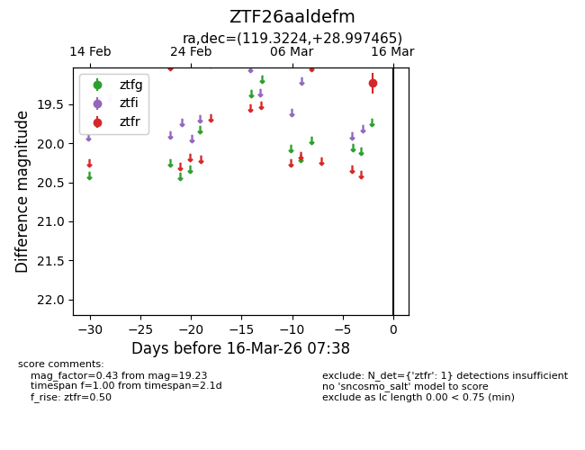
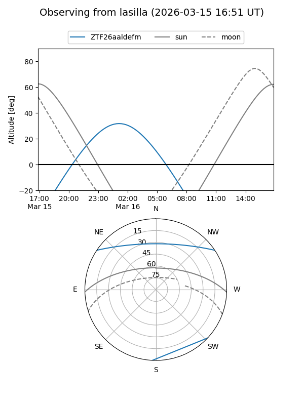
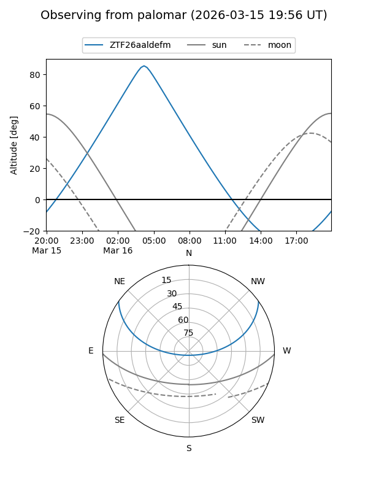

ZTF26aaldefm
Target ZTF26aaldefm at 2026-03-16 07:40
Aliases and brokers:
FINK: link
Lasair: link
ALeRCE: link
alt names
ZTF26aaldefm (ztf,fink_ztf)
Coordinates:
equatorial (ra, dec) = 119.3224,+28.99747
equatorial (HMS+DMS) = 07:57:17.38,+28:59:50.87
galactic (l, b) = (192.1443,+26.20910)
Flags:
Photometry:
last ztfr=19.23
1 ztfr detections
Lightcurve

Visibility


Additional plots